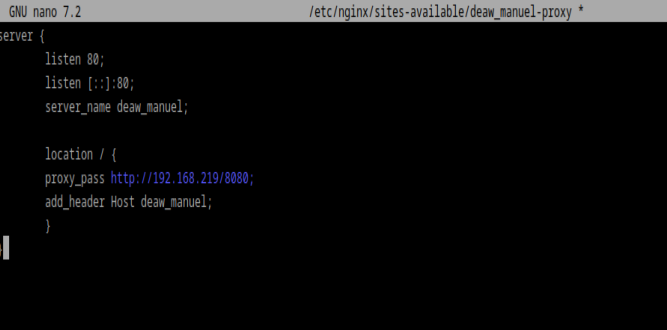

PRÁCTICA 2.3: Proxy inverso con Nginx
En esta práctica vamos a crear un proxy inverso para nuestro servidor web.
Configuraciones iniciales
Para comenzar vamos a duplicar nuestra maquina virtual con el servidor web (generandola con nueva MAC, si no no tendríamos ip en esta máquina):
Como podemos comprobar ambas tienen direcciones ip diferentes:
El diagrama quedaría así:

Donde la nueva máquina actua como proxy inverso.
Cambiamos el nombre de nuestra web por webserver y modificamos los archivos pertinentes:

Nginx proxy inverso
Ahora, cuando intentamos acceder a http://ejemplo-proxy (o el nombre que tuvieráis de vuestra web de las prácticas anteriores), en realidad estaremos accediendo al proxy, que nos redirigirá a http://webserver:8080, el servidor web que acabamos de configurar para que escuche con ese nombre en el puerto 8080.
Para ello:
Crear un archivo de configuración en sites-available con el nombre deaw_manuel-proxy
y hay que cambiar el archivo host que configuramos en la práctica 2.1
COMPROBACIONES
Miramos los archivos access.log de la máquina:

Además añadimos una cabecera de la siguiente forma:

y comprobamos en el navegador que se muestra: